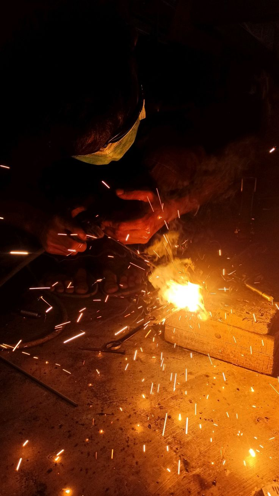
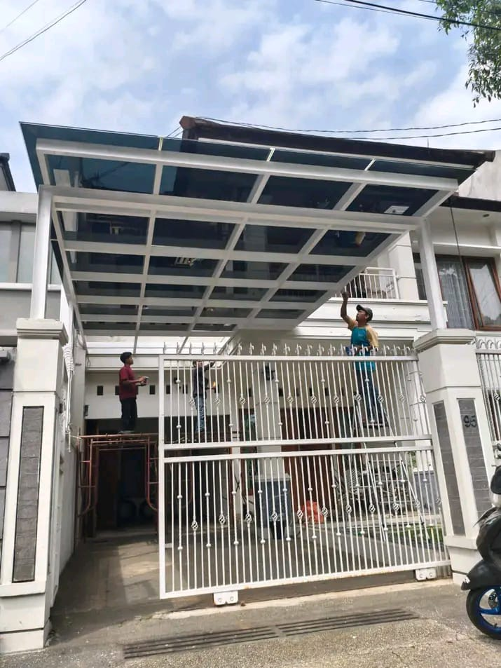
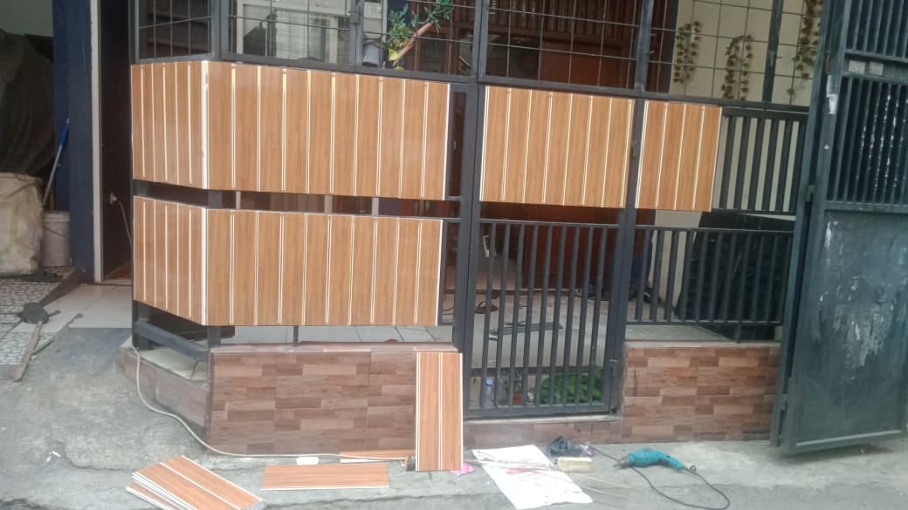
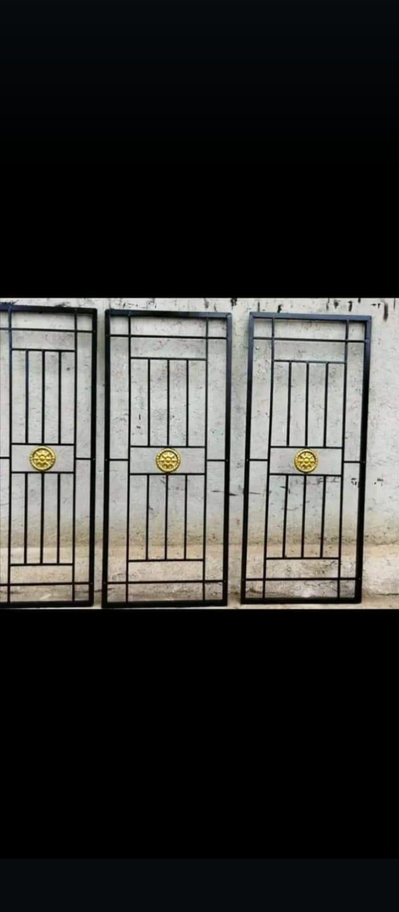
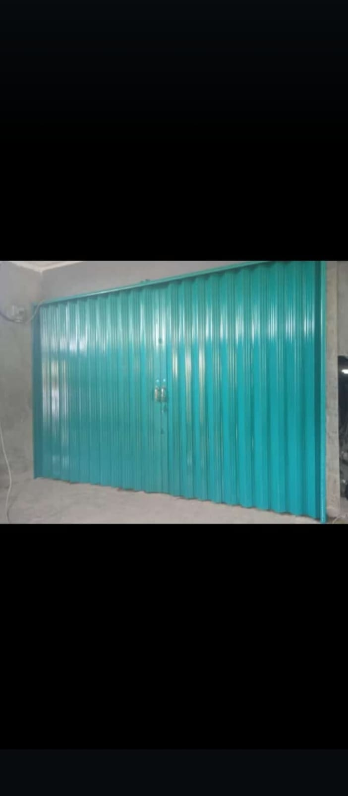
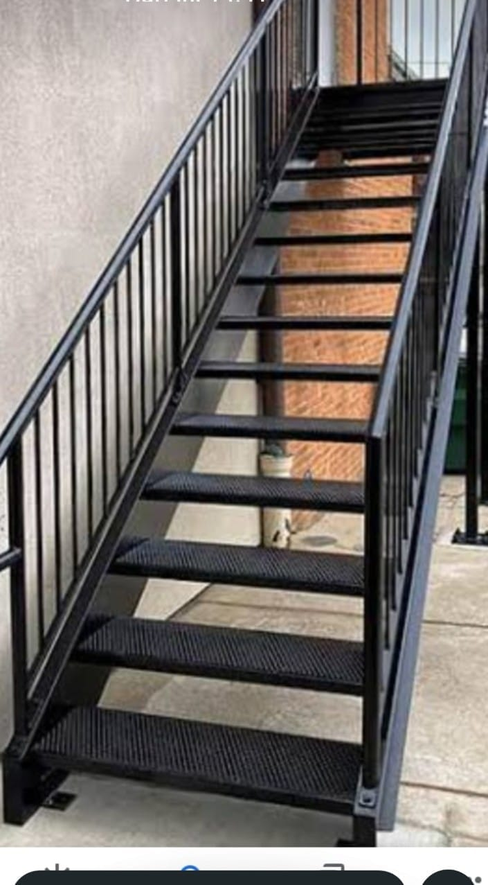
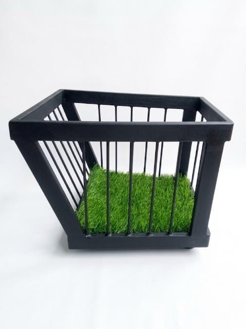

JASA LAS PROFESIONAL
Menerima berbagai pekerjaan las seperti pagar, kanopi, railing, teralis, tangga, dan pengerjaan besi custom lainnya.

KUAT • RAPIH • PROFESIONAL
LAYANAN KAMI
Pembuatan kanopi besi dan baja ringan dengan desain sesuai kebutuhan rumah atau tempat usaha.
Pembuatan pagar, pintu besi, dan berbagai model sesuai desain yang Anda inginkan.
Teralis jendela dan pintu dengan pengerjaan rapi, kuat, dan tahan lama.
Mengerjakan berbagai kebutuhan konstruksi dan rangka besi sesuai desain custom Anda.
TENTANG KAMI
Selamat datang di Sinar Mandiri FG, bengkel las terpercaya yang berdedikasi menghadirkan solusi pengerjaan logam berkualitas tinggi untuk kebutuhan hunian, properti komersial, hingga fasilitas umum Anda.
Sinar Mandiri FG berawal dari sebuah bengkel las di Jakarta Barat sejak tahun 2019. Berkat kepercayaan dan dukungan penuh dari para pelanggan setia di Jakarta, kami terus bertumbuh dan berani melangkah lebih jauh.
Kini, kami telah hadir dengan membuka cabang baru di Tasikmalaya, Jawa Barat, guna menjangkau lebih banyak pelanggan di wilayah Priangan Timur dan sekitarnya.
Meskipun kini telah memiliki dua cabang, komitmen dan prinsip dasar kami tetap sama dan tidak pernah berubah. Setiap pengerjaan di cabang manapun selalu berpegang pada tiga pilar utama:
Kami menggunakan material logam dan besi berkualitas tinggi yang sesuai dengan spesifikasi tanpa ada kompromi.
Dikerjakan oleh tenaga ahli yang berpengalaman, menghasilkan sambungan las yang kuat, presisi, serta memiliki finishing yang halus dan estetis.
Kami memberikan jaminan kepastian dan ketenangan bagi setiap pelanggan melalui layanan purna jual yang jelas.
PORTOFOLIO






TESTIMONI
"Pengerjaan kanopi rapi banget, sesuai desain yang saya minta. Tukangnya ramah dan tepat waktu. Recommended!"
"Pagar dan pintu besi hasilnya kokoh dan halus sambungannya. Harga juga bersaing dibanding tempat lain."
"Railing tangga untuk toko saya hasilnya kuat dan aesthetic. Sudah 2 tahun tidak ada masalah sama sekali."
Butuh jasa las untuk rumah atau usaha?
HUBUNGI KAMI